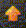

Häufig gestellte FragenMehr oder weniger häufig gestellte Fragen über Enigma
 Installation und UpdatesIch habe versucht, Enigma von eurer Download-Seite herunterzuladen, aber der Server reagiert nicht oder bricht den Download ab.Server arbeiten manchmal nicht richtig -- aufgrund von Software- oder Hardwarefehlern, oder einfach aufgrund von Wartungsarbeiten. Wir können Ihnen hier nicht wirklich weiterhelfen, da wir diese Server nicht besitzen. Versuchen Sie bitte einen der Spiegelserver (ersetzen Sie dafür „download“ in der URL gegen „download2“) oder versuchen Sie es morgen erneut. Ich habe ein Spiel namens Enigma heruntergeladen, aber es sieht ganz anders aus?!Es gibt ein weiteres Spiel mit dem Namen Enigma, ein text-basiertes Rätselspiel mit Elementen aus Boulderdash und Sokoban; besuchen Sie http://www.chiark.greenend.org.uk/˜sgtatham/enigma/ um mehr darüber zu erfahren. Wenn Sie unser Enigma installieren möchten, laden Sie es von unserer Download-Seite herunter. Wie mache ich ein Update für Enigma?Im Grunde gibt es drei Arten von Updates: Die Weltrekordliste (bzw. Spielergebnisse oder Statistiken), die Levels und das Programm.
Was für automatische Updates bei den Weltrekorden? Bis jetzt wurde noch nie geupdatet!Gehen Sie ins Optionsmenü und stellen Sie „Update Bewertungen“ auf „Autom.“. Enigma versucht dann etwa einmal in der Woche ein Auto-Update. Wenn Sie manuell updaten möchten, laden Sie die Datei ratings.xml über den Link auf dieser Seite herunter und kopieren Sie sie in Ihren Userpfad. Was für automatische Updates bei den Weltrekorden? Ich möchte nicht, dass sich eine Anwendung bei mir ungefragt mit dem Internet verbindet!Keine Sorge; Enigma wird nicht versuchen, das Internet zu kontaktieren, solange Sie dieses Feature nicht im Optionsmenü aktiviert haben: Der Knopf „Update Bewertungen“ ist standardmäßig auf „Nie“ geschaltet, Sie können ihn aktivieren und deaktivieren. Wenn Sie manuell updaten möchten, laden Sie die Datei ratings.xml über den Link auf dieser Seite herunter und kopieren Sie sie in Ihren Userpfad. Ich habe eine Enigma-Level im Internet gefunden und möchte ihn spielen …Falls sich der Level im 1.0-XML-Format befindet, können Sie ihn einfach herunterladen und in das Unterverzeichnis „levels/auto“ Ihres Userpfades kopieren. Starten Sie dann Enigma neu, öffnen das Levelpack-Menü, wählen Sie „User“ aus und als Levelpack „Autom.“. Dort sollte der neue Level nun erscheinen. Sollte er nicht erscheinen, hat der Level möglicherweise ein früheres Format. Falls Sie nicht mit der Arbeit mit Leveldateien erfahren sind, lesen Sie die Frage „Wie konvertiere ich meine alten 0.92/0.81/… Leveldateien ins 1.0-Format?“ weiter unten. Beachten Sie bitte, dass der Level fehlerhaft sein kann. Falls dem so ist, wird sich Enigma beim Programmstart darüber beschweren. In diesem Fall kann es sinnvoll sein, den Level aus dem „levels/auto“-Verzeichnis wieder zu entfernen. Wie kann ich Sokoban-Level aus dem Internet spielen?Wir arbeiten daran. Bis dahin müssen Sie selber eine Enigma-Level daraus erstellen. Sie können dazu die ralf_sokoban-Bibliothek verwenden, betrachten Sie dafür die Leveldateien im „data/levels/enigma_sokoban“-Unterverzeichnis Ihrer Enigma-Installationsverzeichnisses. Enigma als ProgrammMein Bildschirm wird manchmal schwarz, aber kurz darauf kommt Enigma zurück, als sei nichts geschehen?Das ist Ihr Bildschirmschoner. Mausbewegungen während Enigma werden manchmal nicht vom Bildschirmschoner registriert, so dass er annehmen muss, Sie hätten Ihren Computer seit einiger Zeit nicht verwendet. Sie können entweder den Bildschirmschoner abschalten, oder versuchen vom Fenster- in den Vollbildmodus zu wechseln (siehe „Options Menü“). Falls Sie GNOME benutzen, können Sie folgenden Befehl in einem Terminalfenster starten: gnome-screensaver-command --inhibit(der Befehl wird nicht beendet - lassen Sie ihn einfach laufen!) Dann starten Sie Enigma. Wenn Sie Enigma wieder beendet haben, drücken Sie Ctrl+C im Fenster mit dem „inhibit“-Befehl, und Ihr Bildschirmschoner sollte wieder normal arbeiten. Auch einfaches Schließen des Terminalfensters sollte den „inhibit“-Befehl abbrechen. Enigma startet nicht, es wird eine Fehlermeldung der Form „mismatch of state.xml and enigma.score“ angezeigt.Senden Sie uns bitte Kopien dieser zwei Dateien (vgl. „Wo sind diese enigma.score- und state.xml-Dateien?“ weiter unten). Falls Sie mal eine frühere Version von Enigma installiert hatten, senden Sie uns bitte auch eine Kopie der Datei „enigmarc.lua2“ aus demselben Verzeichnis. Dann können wir Ihr Problem analysieren. In der Zwischenzeit können Sie versuchen, „state.xml“ und „enigma.score“ zu löschen und Enigma zweimal neu zu starten. Berichten Sie uns bitte, ob der Fehler weiterhin erscheint. Enigma startet nicht, es wird eine Fehlermeldung der Form „Datatype error: Type: invalid data type Value exception, Message: Value '44734' must be less than or equal to maxinclusive '32767'“ angezeigt. („Value“ kann einen anderen Wert annehmen.)Dies ist ein bekanntes Problem. Es resultiert aus einem 0.92-Spielergebnis von mehr als 9 Stunden für einen Level. Machen Sie eine Sicherungskopie Ihrer „enigmarc.lua2“ (befindet sich im Userpfad), entfernen Sie sie dann oder benennen Sie sie um (auf diese Weise verlieren Sie alle 0.92-Spielergebnisse), oder öffnen Sie einen Texteditor. Dort können Sie nach der Zeile suchen, in der der fehlerhafte Wert erscheint (im Beispiel „44734“) und diese Zeile löschen (auf diese Weise verlieren Sie nur das 9-Stunden-Spielergebnis). Sichern Sie „enigmarc.lua2“ und löschen Sie dann „state.xml“ und „enigma.score“, so dass Enigma gezwungen ist, sie neu zu erzeugen. Starten Sie Enigma zweimal neu und testen Sie, ob der Fehler verschwunden ist. Während dem Spiel oder in den Menüs bewegt sich der Mauscursor nur nach unten und rechts. (Linux)Dies ist ein Fehler in SDL, einer der Bibliotheken, die Enigma benutzt. Versuchen Sie folgendes: export SDL_VIDEO_X11_DGAMOUSE=0 enigma Das sollte bereits reichen. Falls es funktioniert, können Sie enigma so aliasen, dass der export-Befehl enthalten ist. Bitte schicken Sie auch eine kurze Mitteilung an unsere Mailingliste auf enigma-devel@nongnu.org, mit Informationen über Ihren Computer, Ihre Linuxdistribution und SDL-Version, damit wir darüber informiert sind, wie oft und auf welchen Systemen dieser seltsame Bug auftritt. Ich benutze Kaspersky Internet Security 7.0. Wenn ich Enigma starte, kommt „Keylogger gefunden“.Ein Keylogger ist ein Programm, das Maus- oder Tastatureingaben umleitet. Solche Programme können zur Spionage eingesetzt werden, um Informationen über Sie zu stehlen. Allerdings leitet Enigma, wie viele andere Spiele auch, von sich aus Maus- und Tastatureingaben um: Funktionstasten müssen ausgewertet werden, Mausbewegungen werden von Koordinaten in Kräfte umgerechnet. Deshalb erscheint die Nachricht. Wenn Sie Enigma von unserer Homepage heruntergeladen haben, sollten Sie Enigma in Kasperskys vertrauenswürdige Zone aufnehmen. Wenn Sie Enigmas Integrität testen wollen, benutzen Sie die Checksummen im Download-Bereich. Ich benutze Linux. Während ich Enigma spiele, funktioniert xmms (oder irgend ein anderer Musicplayer) nicht, oder Enigma hat keinen Sound.Ihr Musicplayer sollte ALSA anstelle von OSS benutzen. Im Falle von xmms: Rechts-Klick, „Optionen“, „Einstellungen“, „Audio-I/O-Plugins“, „Ausgabe-Plugin“: Wählen Sie ALSA, wenn möglich. Wenn ich ein Levelpaket öffne, dauert es so lange, bis die Bilder geladen sind?Das geschieht nur zu Beginn, und auch nur, wenn Sie keine Vorschaubilder zusammen mit Enigma heruntergeladen haben. Das ist normal und wird verschwinden, sobald alle Vorschaubilder erzeugt wurden. Wo sind diese enigma.score- und state.xml-Dateien?Ihr Pfad heißt „Userpfad“. Sie können ihn finden, wenn Sie das Optionsmenü öffnen, oder im Hauptmenü F2 drücken. Die Standardeinstellung ist die folgende:
Auf einem Linux/Unix-System: Ich habe einen Fehler gefunden!Sie können uns entweder eine Mail an die Entwickler-Mailing-Liste schicken: enigma-devel@nongnu.org, auf mag-heut.net posten oder einen Fehlerreport auf Berlios ausfüllen: http://developer.berlios.de/projects/enigma-game/ klicken Sie dort auf „Bug Tracking“ („Fehlerverfolgung“) und „Submit a Bug“. Hierfür benötigen Sie einen Account auf Berlios. Um einen zu erzeugen, benutzen Sie „New User“ („Neuer Benutzer“) auf der linken Seite. Ihr Bericht sollte folgende Informationen enthalten:
Insbesondere der vierte Punkt ist wichtig. Es gibt Dutzende Arten, auf die eine Anwendung „abstürzen“ oder „einfrieren“ kann. Beschreiben Sie einfach genau, was Sie gemacht haben und was Ihr Monitor daraufhin angezeigt hat. Falls Sie einen „ernsten Fehler“ beobachtet haben (Absturz, Anwendung eingefroren etc.; nicht einfach nur eine fehlerhafte Level), starten Sie bitte Enigma von der Konsole aus neu mit dem Befehl „enigma --log“ und versuchen Sie, den Fehler zu reproduzieren. Dadurch werden zwei Dateien namens stdout.txt und stderr.txt im Installationsverzeichnis von Enigma erzeugt, die wichtige Informationen für uns enthalten. Bitte hängen Sie sie in ihrer Mail an uns an. (Vgl. hier.) Ich habe an die Mailing-Liste geschrieben, aber es hat niemand geantwortet :-(Entschuldigung, das geschieht leider zu häufig. Es nicht so, dass wir nicht an Ihrer Mail interessiert sind; wir sind nur zu beschäftigt, und manchmal hat auch einfach niemand eine Antwort und wartet darauf, dass jemand anderes antwortet. Also, schreiben Sie uns bitte ein zweites Mal und fragen Sie erneut. Nun, sollten Sie uns geschrieben haben, um uns zu ermuntern, haben wir sicherlich schon jene warme Zufriedenheit gespürt, die solche Danksagungen in uns erzeugen. Wir danken Ihnen vielmals hierfür; und Sie müssen zugeben, dass jede Antwort darauf uns lediglich von weiterer Programmierung abhält ;-) Enigma als SpielDas Spiel ist ganz neu für mich. Wo sollte ich anfangen?Wenn Sie Enigma das erste Mal starten, werden Sie ins Tutorial-Levelpack geführt. Dieses ist gefüllt mit einfachen und Übungsleveln. Nachdem Sie einige Zeit diese Level gespielt haben, sollten Sie am besten mit dem Levelpack „Enigma I“ beginnen und sich dann langsam durch die Levelpacks spielen. Natürlich können Sie auch mit einem anderen Levelpack anfangen, aber die Levels sind so geordnet, dass nicht zu viele neue Spielobjekte auf einmal eingeführt werden. Warum sagt ihr, es gäbe mehr als 900 Level? Da gibt es nur 65, und die sind alle zu einfach.Wenn Sie Enigma das erste Mal starten, beginnen Sie im Tutorial-Levelpack, das aus einfacheren und Übungsleveln zusammengestellt ist. Sobald Sie meinen, genügend geübt zu haben, können Sie zu den „echten“ Levelpacks wechseln: Klicken Sie dazu auf den Knopf „Levelpaket“, dann auf der rechten Seite auf „Enigma“, und schließlich auf eines der Pakete „Enigma I“ bis „Enigma VI“. Statt der Enigma-Gruppe können Sie natürlich auch die „Deja Vu“- und „Sokoban“-Gruppe wählen und erforschen. Was ist die Bedeutung der Icons auf den Knöpfen, der Medaillen und Federn im Levelmenü?Ganz kurz: Es gibt zwei Schwierigkeitsgrade zwischen denen Sie wählen können: Einfach („Easy-Mode“) und normal („Normal-Mode“). Allerdings besitzen nicht alle Level einen Easy-Mode. Eine goldene Medaille auf einer Levelvorschau zeigt an, dass Sie diese im Normal-Mode gelöst haben, eine silberne, dass Sie sie im Easy-Mode gelöst haben. Eine Feder wird angezeigt, wenn es einen Easy-Mode gibt, den Sie aber noch nicht gelöst haben. Die Knöpfe haben von links nach rechts die folgenden Bedeutungen:
Für Details konsultieren Sie bitte das Benutzer-Handbuch. Was machen die [füge beliebiges Spielobjekt ein]?Es gibt verschiedene Wege, das herauszufinden. Wir ermuntern Sie dazu, einfach mit neuen Spielobjekten herumzuspielen, zu experimentieren; machen Sie sich auf Überraschungen gefasst! Oder besuchen Sie www.mag-heut.net und suchen Sie im Forum nach Informationen. Oder werfen Sie einen Blick ins Benutzer-Handbuch, einige Objekte werden dort erklärt. Falls Sie detaillierte Informationen über ein Objekt benötigen, z.B. weil Sie einen Level schreiben wollen, werfen Sie einen Blick ins Referenz-Handbuch. Allerdings benötigen Sie hierfür den Namen des Objektes, das Sie suchen.
Ich kann [füge beliebige Level ein] nicht lösen!Kein Grund zur Verzweiflung. Es gibt Dutzende von Leveln, für deren Lösung selbst Experten Wochen benötigen. Hinweise zu einzelnen Leveln finden Sie im Handbuch und auf http://www.mag-heut.net/. Ich möchte keine Irrgarten/Drehtüren/Hüpf/…-Level spielen.Es gibt keinen Sinn darin, Level zu spielen, die Sie nicht mögen. Insbesondere wird nichts passieren, wenn Sie alle Level gelöst haben; es gibt keinen versteckten Level oder dergleichen, den Sie verpassen könnten, wenn Sie nicht alle Level gelöst haben. Davon abgesehen, mögen verschiedene Spieler verschiedene Level. Darum werden wir keine scheinbar weniger interessanten Level aus den Standard-Packs entfernen. Aber wir laden Sie gerne dazu ein, eigene Levelpakete zu komponieren, aus den Leveln, die Sie am meisten mögen! Lesen Sie dazu Kapitel 2 im Referenz-Handbuch für Details. Sie können dann diese Levelpakete sogar auf mag-heut.net posten, so dass auch andere Spieler davon profitieren. Ich finde Enigma zu schwer, ich mag die Idee, aber es ist zu frustrierend.Nunja, Open Source Software lebt von konstruktiver Kritik. Schreiben Sie selber Level, die Sie mögen, und schicken Sie sie uns, oder verteilen Sie sie selber, z.B. via http://www.mag-heut.net/. Ich würde gerne von vorn beginnen! Gibt es eine Möglichkeit, einen Level als ungelöst zu markieren?Wenn Sie alle Ihre Spielergebnisse (Easy- und Normal-Mode) zu einem Level löschen wollen, gehen Sie ins Levelmenü, zeigen Sie mit dem Mauszeiger auf den Level (nicht klicken!) und drücken Sie „u“. Wenn Sie alle Ihre Ergebnisse löschen wollen (wollen Sie das wirklich?), dann entfernen Sie die Datei „enigma.score“. Sie wollen dann vielleicht auch Ihre 0.92-Ergebnisse löschen oder umbenennen („enigmarc.lua2“). Bitte bedenken Sie, dass mit dem Löschen der Datei „enigma.score“ auch alle Ihre persönlichen Bewertungen von Leveln verloren gehen! Ich habe einen Level gesehen und möchte ihn nochmal spielen; aber ich habe vergessen, wo er ist. Wie kann ich ihn wiederfinden?Erinnern Sie sich an den Titel oder einen Teil des Titels? Dann klicken Sie auf „Suche“ im Levelpack-Menü, und geben Sie ihn dort ein. Alternativ dazu können Sie das „History“-Levelpaket durchsuchen, das Sie in der User-Levelgruppe finden (gehen Sie ins Levelpack-Menü, wählen Sie links „User“ und dann rechts „History“). Hier werden alle Level referenziert, die Sie erst kürzlich gespielt haben, in chronologischer Reihenfolge. Beachten Sie bitte, dass keine der beiden Methoden Sie wieder in das Levelpaket bringt, aus dem heraus Sie früher den Level gestartet haben. Wenn Sie sein Levelpaket suchen, können Sie sich seine Infoseite ansehen (Rechts-Klick im Levelmenü). Lesen Sie die Zeile „Level Pfad“. Diese könnte Ihnen einen Hinweis geben, in welchem Levelpaket Sie den Level suchen müssen. Wie kann ich die Welt von meinen Rekorden wissen lassen?Lesen Sie dafür bitte hier den Abschnitt „Spielergebnisse einsenden“ oder den Abschnitt 4.3 („Ergebnisse hochladen“) im Benutzerhandbuch. Darf ich auch Spielergebnisse einsenden, die mit Version 0.92 erreicht wurden?Ja. Alle Ergebnisse, die inkompatibel zur 1.00-Version der Levels sind, werden nicht in der Statistik berücksichtigt. Sie werden ein kleines rotes Dreieck bei solchen Levels im Levelmenü bemerken. Wenn Sie diese Level mit 1.00 lösen, werden Ihre neuen Ergebnisse das nächste Mal registriert. Einige der Weltrekorde scheinen umöglich -- sind die gemogelt?Es könnte einige Level mit vom Autor unbeabsichtigten Abkürzungen geben. Manche Level haben auch unkonventionelle Lösungen. Aber wir kennen niemanden, der absichtlich schummelt. Werfen Sie einen Blick ins Spielerforum auf http://www.mag-heut.net/. Viele erfahrene Spieler hören dort zu und geben Ihnen vielleicht Tipps. Ich hatte einen Weltrekord für einen Level. Nach einem Neustart von Enigma ist er verschwunden!Ihr Spielergebnis ist nach wie vor derselbe. Aber Sie konkurrieren mit anderen Spielern weltweit um die besten Ergebnisse. Wenn Sie die „Update Bewertungen“-Einstellung auf „Autom.“ gestellt haben, wird Enigma etwa einmal im Monat eine Liste mit aktualisierten Statistiken und Weltrekorden herunterladen. Sorry, offensichtlich hat jemand Ihren Rekord gebrochen. Enigma in der EntwicklungWie kann ich euch helfen?
Kann ich Euch finanziell unterstützen?Wir arbeiten daran… Allerdings, was wir eigentlich brauchen könnten ist Ihre Zeit, durch die Sie uns bei den zuvor geschilderten Aufgaben helfen. Wie kann ich einen Level für Enigma schreiben?Lesen Sie dazu das Referenz-Handbuch, besuchen Sie mag-heut.net oder studieren Sie existierende Level; diese befinden sich im Unterverzeichnis „data/levels/∗“ des Installationsverzeichnisses. Falls es Ihnen schwer fällt, Ihre Level zu programmieren, fragen Sie die Leute auf mag-heut.net um Hilfe -- sie könnten Ihre Ideen in richtige Level umwandeln! Gibt es einen Editor für Enigma?Ja und Nein. Für frühere Versionen von Enigma gibt es Editoren wie Star.LUA und BlackballEd. Allerdings hat sich Enigma weiterentwickelt, und momentan (Feb.2007) sind diese Editoren nicht mehr kompatibel mit Enigma 1.00. Sie können sie weiterhin verwenden, um die groben Umrisse Ihrer zukünftigen Level zu gestalten, müssen danach aber noch immer am Levelcode arbeiten, um ihn kompatibel zu machen. BBE und Star.LUA sind lediglich für Windows und Linux programmiert. Für Mac-Nutzer gibt es bislang noch gar keinen Editor. Die beiden Editoren finden Sie hier: http://blackballed.sourceforge.net/ und http://www.capkoh.narod.ru/SL_MainPage.html. Ich habe neue Levels geschrieben, würdet ihr sie in Enigma einbinden?Ja, das werden wir gerne. Bitte senden Sie uns eine Email an die Entwickler-Mailing-Liste, wenn Sie gerne Ihre Level mit anderen teilen möchten. Die Mailing-Liste hat ein Limit von 300k, also fragen Sie bitte vorher an, wenn Sie größere Dateien verschicken möchten. Bitte beachten Sie, dass wir gewöhnlich nur Level akzeptieren können, die von Ihnen mit derselben oder einer freieren Lizenz als Enigma ausgestattet wurden. Ich möchte ein Objekt in meinem neuen Level verwenden, aber kenne nicht seinen Namen.Schauen Sie hierfür in das Referenzhandbuch oder analysieren Sie einen Level, in der das Objekt erscheint. Wie kann ich Enigma auf/für Windows kompilieren?Die Windows-Version von Enigma ist etwas komplizierter zu erschaffen als die Unix-Versionen. Die Hauptentwicklungsarbeit für Enigma findet unter Linux statt, so dass die Kompilation hierfür optimiert wurde. Die offiziellen Enigma Versionen für Windows werden tatsächlich sogar auf Linux-Rechnern kompiliert, unter Verwendung von MinGW als Cross-Compiler. MinGW wiederum steht auch selber als Windows-Version zur Verfügung, aber Sie benötigen weitere, Unix-typische Hilfsmittel um damit das Spiel zu kompilieren. Bitte lesen Sie die Datei doc/README.mingw32 für umfassendere Instruktionen über die Verwendung von MinGW für Enigma. Mit etwas Arbeit sollte es möglich sein, Enigma unter Verwendung aktueller Versionen von VisualStudio zu kompilieren, aber bislang hat noch niemand versucht, Enigmas Quellcode entsprechend anzupassen und geeignete Projektdateien zu entwerfen. Wie konvertiere ich meine alten 0.92/0.81/… Leveldateien ins 1.0-Format?Das ist ein nicht allzu einfaches Vorhaben. Wenn Sie ein Lua-basiertes Level verwenden, ist es mit Sicherheit einfacher als eine der früheren XML-Versionen, von denen es sowieso nur wenige Repräsentanten gibt. Zuallererst müssen Sie den Lua-Code in einem 1.00-XML-Korsett einbetten. Sie können darüber im Referenz-Handbuch nachlesen, Abschnitte 3.2, 3.3, und möglicherweise 3.5. Sie könnten auch einen Blick auf http://enigma.mal2.ch/index.php?title=XML-Metadaten werfen. Als nächstes müssen Sie alle „Require“ und „dofile“-Zeilen aus dem Lua-Code entfernen und gegen Bibliotheks-Aufrufe im XML-Teil ersetzen, vergleichen Sie dazu Abschnitt 3.3.6, Element „dependency“. Schließlich müssen einige Spielobjekte ersetzt werden; insbesondere existiert „fl-ice_001“ nicht mehr. Ersetzen Sie es mit „fl-ice“. Wenn Sie BBE verwenden, müssen Sie auch einige Attributsnamen korrigieren, beispielsweise von „it-magnet“. An dieser Stelle sollte Ihr Level bereits in Enigma lauffähig sein. Geben Sie ihm noch etwas Feinschliff und prüfen Sie, ob alle Teile richtig funktionieren. Falls Sie noch immer ein Problem feststellen und es nicht selbst lösen können (das Referenz-Handbuch hält ausführliche Informationen über jedes Spielobjekt bereit), dann mailen Sie an enigma-devel@nongnu.org. Wir sind vielleicht in der Lage, den Fehler in Ihrem Level aufzuspüren und zu beseitigen. Ich habe eine Idee für ein neues Enigma Objekt.Wir begrüßen stets neue Ideen und Anmerkungen. Enigma hat schon einen recht großen Zoo an Objekten. Jedes neue muß daher einige Kriterien erfüllen um als wertvolle Ergänzung in Betracht gezogen werden zu können.
Ferner benötigen wir Grafiken, den C++ Code und evtl. spezielle Geräusche. Je mehr Sie davon neben der grundlegenden Idee beitragen können, desto schneller können wir die Idee auswerten und diskutieren. Kopierrechte und GarantienDarf ich Kopien von Enigma an meine Freunde weitergeben?JA! Bitte machen Sie das. Oder geben Sie ihnen den Link zu unserer Download-Seite. Darf ich Enigma in meiner kommerzielle Spielesammlung eingliedern? Würden Sie mir eine spezielle Lizenz gewähren?Sie müssen nur die Bedingungen der GPL befolgen, die Ihnen sogar erlauben Enigma unter gewissen Bedingugnen zu verkaufen. Wir können niemand spezielle Sonderbedingungen jenseits dieser offenen Lizenz gewähren. Bitte fragen Sie Ihren Anwalt, ob Ihren Anforderungen mit der GPL verträglich sind. Falls Sie sich nicht mit der GPL auskennen kann Wikipedia Ihnen einen ersten Überblick über die wichtigsten Pflichten und Rechte der GPL geben. Wir sind daran interessiert zu Wissen wo Enigma distributiert wird. Bitte informieren Sie uns, und wir setzen evtl. einen Link auf Ihre Seite. Falls Sie Enigma distributieren oder einen Artikel über Enigma in einer Zeitschrift schreiben würden wir uns freuen ein kostenloses Belegexemplar zu erhalten. WeiteresWarum sind die Enigma Dienste an so vielen unterschiedlichen Adressen? Was ist bei Sourceforge, was bei Berlios, was bei nongnu, was bei enigma-game.org usw.?Als Enigma öffentlich verfügbar wurde, schienen die Dienste, die Savannah (nongnu.org) anbot, hinreichend. Mit der Zeit wechselte die Entwicklung zwischen verschiedenen Quellcodearchiven wie Arch und CVS. Letztendlich nach dem Enigma 0.92 Release wurde ein Anbieter gesucht, der Subversion anbot. Zu diesen Zeitpunkt war Berlios einer der wenigen die diesen benötigten Dienst anboten. Deshalb finden Sie die Entwicklung nach 0.92 auf Berlios und ältere Archive auf Savannah. Ende 2011 berichtete Berlios von finanziellen Unsicherheiten, so dass wir mit einer Einstellung ihres Service rechnen mussten. Obwohl sich später das Fraunhofer-Institut als Sponsor anbat und die Existenz von Berlios sicherte, haben wir bereits über einen Wechsel zu Sourceforge nachgedacht. Für den Wechsel sprach auch die Verfügbarkeit des Versionskontrollsystems GIT. Der aktuelle Bug-Tracker befindet sich noch immer bei Berlios, bis wir seinen Inhalt nach Sourceforge transferieren. Es gibt auch noch einen veralteten Bug-Tracker auf Savannah. Andere Dienste wie das Forum wurden als private Dienste von Enigma Nutzern gestartet und laufen nach wie vor unverändert unter ihren Adressen. Die Homepage steht nach wie vor auf Savannah. Dies limitiert uns auf statischen Inhalt. Deshalb haben wir die Domain enigma-game.org reserviert, die uns in Zukunft dynamische Dienste wie eine Registrierung von Spielergebnissen, einen Netzwerk Spielserver und mehr ermöglicht. Zur Zeit wird die Adresse auf Savannah umgelenkt und wir nutzen nur Email Dienste unter dieser Adresse. Gibt es so etwas wie eine Enigma Party oder Enigma Convention?Noch nicht, aber vielleicht möchten Sie eine organisieren? Gibt es ähnliche Spiele?Sie wollen vielleicht einige der alten Oxyd®-Spiele testen, besuchen Sie dafür die Yahoo-Oxyd-Gruppe. Insbesondere sollten Sie einen Blick auf www.oxyd-game.com werfen, hier können Sie Oxyd® Extra 2.0 herunterladen und neue Oxyd®-Spiele werden dort zuerst verkündet. Dann sollten Sie mal Ozone ausprobieren, das Enigma um die dritte Dimension ergänzt: http://ozone.game-host.org/wiki/index.php?title=Main_Page Schließlich gibt es noch Mulg, ein Spiel ähnlich Oxyd® für Palm, mit mehr als 370 Level, einem Java-basierten Leveleditor und der Möglichkeit, das Spiel mit einem Tilt-Sensor zu steuern! Besuchen Sie http://www.harbaum.org/till/palm/mulg/. Was ist Eure Verbindung zu den alten Oxyd®-Spielen?Die originale Oxyd®-Serie von Meinolf Schneider (bei Dongleware) war die Hauptinspiration für Enigma, und gibt bis heute Impulse für seine Entwicklung. Falls Sie die Möglichkeit haben, schauen Sie sie sich an, ebenso wie den letzten Nachfolger: Oxyd® Extra v2.0 (www.oxyd-game.com) von Jens Duttke. Wie auch immer, Enigma hat sich darüber hinaus entwickelt. Es hat Ideen von vielen anderen Spielen absorbiert und emuliert sie in speziellen Levels, wie „Enigris“. Und es hat völlig neue Spielobjekte und -ideen entwickelt; und lebt weiterhin … Fragenindex
|